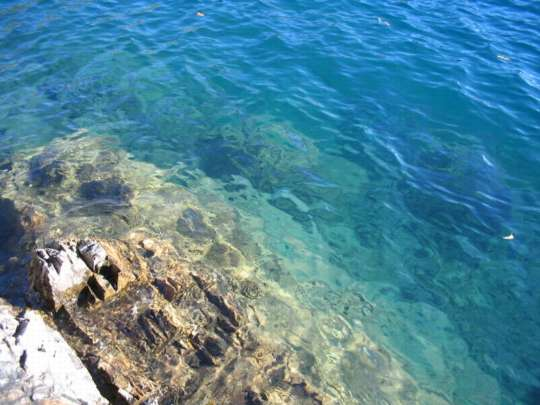
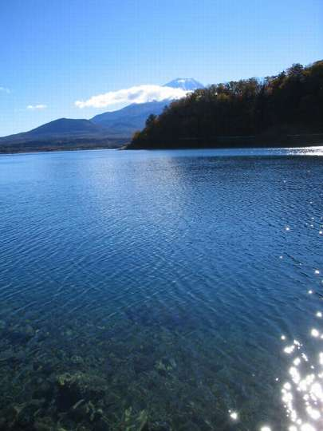
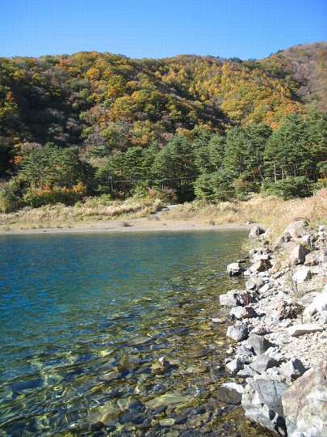
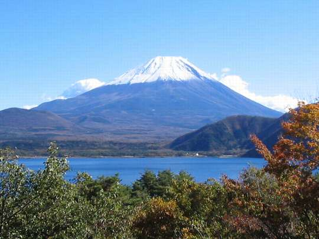

釣行日誌 故郷編
2007/11/13 本栖湖、撃沈
富士には五つの鏡があると言う。その一つである本栖湖を目指して国道139号線を朝霧高原の方へ登っていくと、牧場が広がるあたりで遠くに山並みが見える。その稜線の形がちょっとニュージーランドの山々を想い起こさせてくれるので、ここは私の好きな場所である。牛たちがのんびりと草を食んでいるので、ますます彼の国を想い出す。右手には冨士の雄大な姿も見える。
峠を越えて信号を左に曲がると本栖湖の湖畔に出る。土産物屋で入漁券を買い、いざ出撃である。とはいえ、まったく初めてのこの湖では、どこが良いポイントなのかがわからない。とりあえず湖畔道路をゆっくりと走り、車が停められそうな場所を探すことにした。
取水塔があり、その先のカーブを曲がったところにちょうど車一台分のスペースがあったのでそこへ停める。今日はルアーで釣るのだ。というのも、夏向きのゴアテックスのウェーダーしか持っていないので、もう肌寒いこの季節ではフライフィッシングで腰まで立ち込むのは冷たいだろうとびびってしまったのである。おなじみのコータックのロッドに、これまた旧友のミッチェル409をセットし、長靴を履き、ベストを着て準備完了である。道路から湖畔の藪に降り、小道をワンドに向かって静かに歩み進んでいく。
水面に波紋やさざなみ、鱒の気配はないかと慎重に見極めてから、これもコータックのコンデックス8g金色を結び、緊張と興奮の第１投。スプーンが放物線を描いて沖へと飛び、蛍光色のラインが気持ち良く伸びてゆく。紺碧の水面にルアーが着水し、水面に落ちたラインに付いた巻きぐせがしずかに動き出す。15数えた後、無言の、しかし、期待に満ちたリーリングが始まる。続く第二投、第三投、第四投、なにも反応は無い。風は凪いでおり、水面は鏡のように静かである。水際を遠くの湾の奥に向けてしずかに移動しながらキャスティングを続ける。第五投、第六投、第七投。反応が無い。しつこくキャストを繰り返し、湾の奥の、それ以上は長靴では行けない場所まで来てしまった。しょうがないので、踵を返し、取水塔のある小さな岬の方へ釣り戻ることにした。水はあくまでも清く、青く澄んでおり、ときおり群れて泳いでいる小魚も見える。

『これはこれは。ミノーのほうがいいかな？』
などと思いつつ、取水塔のすぐ下に陣取って、はるか沖合いを目指してキャストを続ける。ときおり、手元まで来たスプーンに反応し、湖底から7cmほどのカジカが泳ぎ上がってきて、ルアーにじゃれつく。
『そうかそうか、スカルピンという手もあるか….』
そんな当てのない次回のフライ釣行の事も考えて見たりする。
何といっても湖の釣りは、ただひたすら二本の足で遡行する渓流釣りと違い、静かであるだけに頭の中にいろいろな妄想、邪念が湧きあがってきて、とどまることを知らない。なんと言っても決定的なのは、水があまりに広大で、この広い湖のどこかに居るであろう鱒の気配が感じられないことである。どこにもライズリングは見られないし、鱒に追われた小魚で波立つ水面も無い。徐々にモチベーションが下がってくる。
『そりゃぁ、すそのフィッシングパークのようなわけにはいかないわな』（笑）
30分ほど粘った後、ふと右後ろを振り返ると、最初に釣り始めた湾の中でライズが見えたような気がしたので、慌てて戻ることにした。ライズのあった場所は、おおよそスプーンの最大射程と同じであり、うまく行けば鱒の姿が拝めそうであった。それっとばかりにコンデックスを遠投し、すぐさまリトリーブを始める。続いて第二投。やっぱり反応は無い。フライでないとだめかなぁと弱気になる。
突然、ザワザワと草むらを降りてくる人の気配を感じ、驚いて振り返ると漁協のおじさんがニコニコと、
「釣れたかい？」
と訊ねてきた。
「いやぁ、さっぱりですぅ」
と答えてベストのポケットから入漁券を取り出して見せた後で、立ち話が始まった。おじさんの言うにはここでは赤色のルアーが効くらしく、また、今朝は餌釣りの人達はそれなりに釣っているそうである。ちなみに、餌釣りのタナを訊いて見ると、なんと６メートルという答えであった。
「６メートルですか！深いですねぇ」
などと驚いて、はるか右手にある遠くの岬を見ると二人の餌釣り人が釣っていた。
「あの人達は、今朝ふたつみっつ上げたようだよ」
とおじさんは言った。
「じゃぁ鱒はけっこう居るんですねぇ」
「ああ、最近は放流量も多いからね」
などという会話の後におじさんは笹の茂みに消えて行った。
『そうか、居ることは居るんだ』
急にやる気が湧き起こり、再び取水塔の岬を目指すことにした。しかし、深さ６メートルというと、かなりカウントダウンしなければならないな、と考え、思い切り沖へ投げて、20数えることにした。しっかり沈めて引いて来ると、突然手元近くで重い手ごたえがあった。
「それっ！」
すかさず合わせると、水中の何かは微動だにしない。
「これは！？」
根掛かりであった。（笑）
泣く泣くラインを引っ張ると、ルアーの結び目であっけなく６ポンドラインは切れてしまい、お気に入りのコンデックス金色は本栖湖の湖底深くを彩ることになってしまった。
がっくりと落ち込んでいると、取水塔の左手、30メートルほど向こうに、釣り人が一人降りてきた。どうやら餌釣りの人らしい。
『おお！ するとこのあたりは良いポイントなのか？』
ちょっと勇気づけられたような気がして、ルアーをハスルアーの赤に結び替え、再び釣り始める。すると、遠くの岬の二人組みの釣り人の一方の人が鱒を掛けたようで、彼の竿が大きく曲がっている。

しばらくの緊張したやりとりの後、その釣り人は35cmほどの魚をタモに取り込んだ。遠くなので種類はわからない。そうこうしているうちに、昼時となり、買って来たサンドイッチで昼食にすることにした。岩の上に腰を下ろし、左隣のおじさんを見ていると、大きな浮きの付いた仕掛けを、スピニングリールのついた長いロッドでほうり込んでいる。餌はなにをつかっているのだろうか？
二つ目のサンドイッチを食べだしていると、最初のワンドにフライマンが二人、ルアーマン一人が現れた。三人とも足早にそのワンドを釣ると、再び車の方へと戻って行った。

湖面は澄み渡り、快晴の青空のもと冨士は遠くにその麗しい姿を誇り、小春日和のように暖かく、これほど素晴らしいシチュエーションは無いが、いかんせんアタリが無い。さっきから右へ左へと小魚が群泳しているのだが、なぜ私のスプーンには鱒が喰いつかないのだ？疑問は朝から続いているが答えは無い。重い沈黙が湖畔に充満している。風がまったく無いので、本栖の湖面は鏡のようであり、私の心中のさまざまな乱れを逐一映し出す。左隣のおじさんにはアタリはあるのか？さっき釣り上げていた遠くの二人組はどんな餌を使っているのか？今年の漁協による放流量はどのくらいあったのか？どんな大きさの鱒たちが放流されているのか？はるか沖合のヒメマス釣りの人たちは、ボートの上で便意を催したらいったいどうやって処理するのか？懸命にボートを漕いで岸に戻るのか？
ちょっと眠くなってきたので、気分転換にそこでの釣りをいったんやめて周辺を偵察することにした。周回道路をゆっくりドライブしてくると、スポーツセンターの前で、ダブルハンドのロッドを振っている人が居た。しばらくその人を見学した後、ぐるりとドライブを続け、千円札のポイントで写真撮影をした。

その後、再び岬へ戻り、また釣りを始めた。懲りることなくカウントダウンを連続し、どこかに居るはずの大物鱒のアタックに儚い望みを持ち続けた。
そうこうしているうちに、西側の山の端に太陽が近づき、湖畔に落ちた山並みの影が、ゆっくり、ゆっくりと岬のほうへ近づいてきた。そしてとうとう日が陰ってしまった。手袋をしていない手がかじかんで来たので、このへんで今日の釣りを切り上げることにした。とうとう本栖湖の青いレインボートラウトには出会うことはできなかった。
帰り際、朝霧高原から見る冨士の頂きが、夕日に染まってほのかに紅く見えた。
釣行日誌 故郷編 目次へ
サイトマップ
ホームへ
お問い合わせ